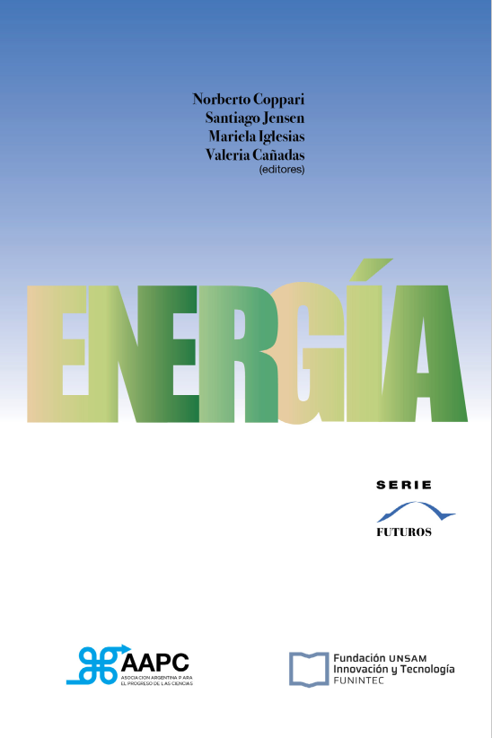
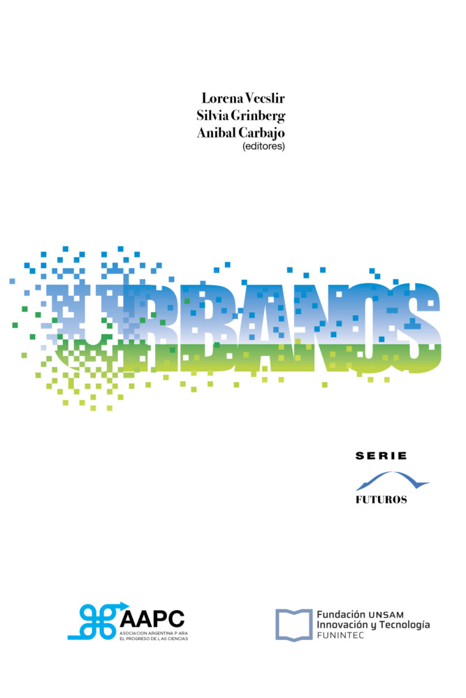
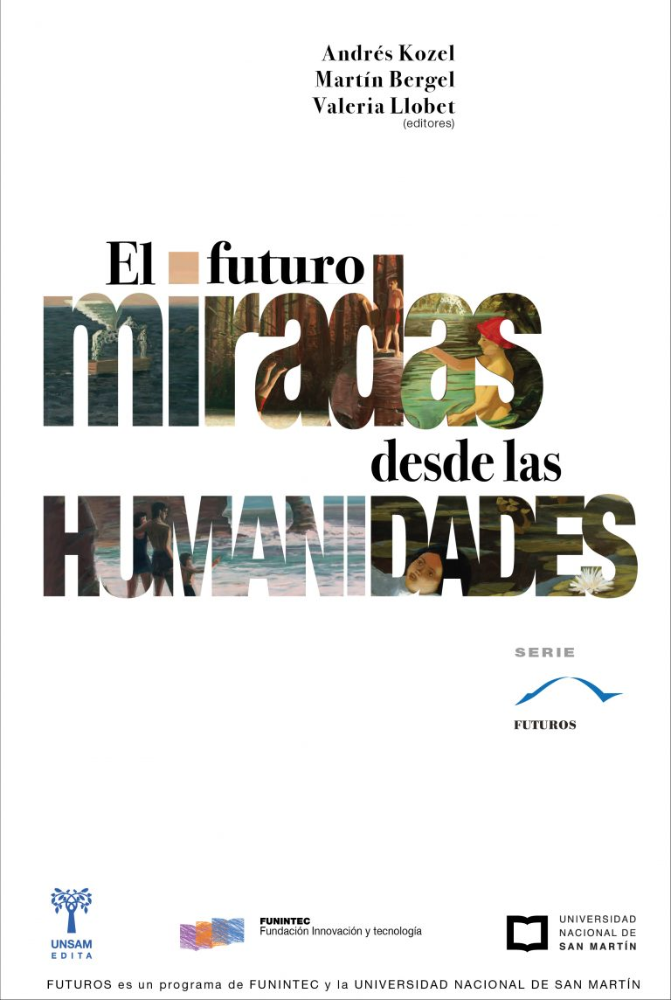
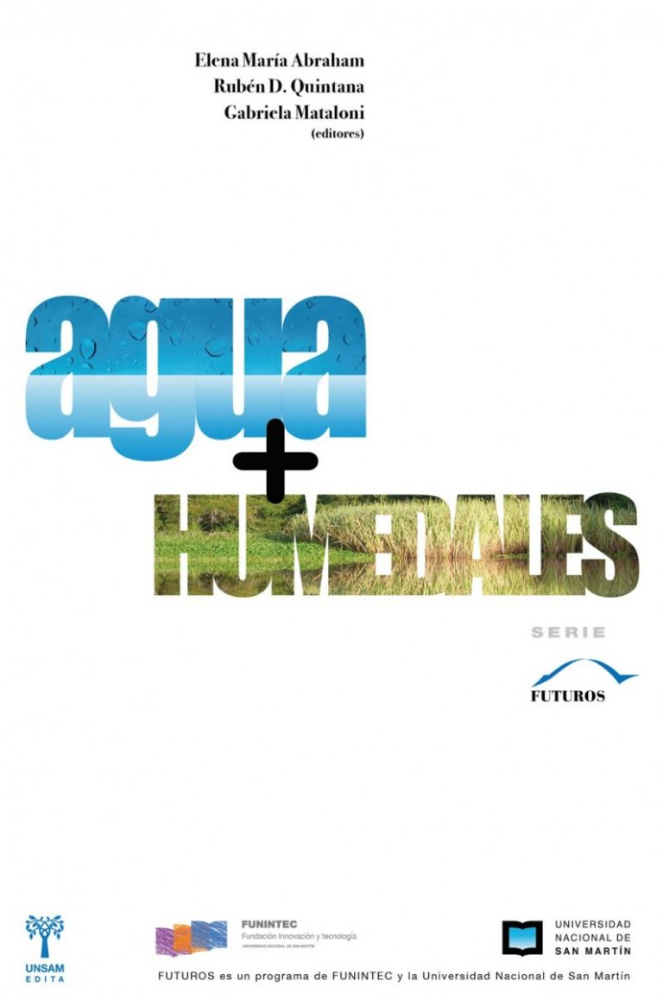

PUBLICACIONES SERIE FUTUROS

julio 25, 2022
Los sistemas energéticos son dinámicos y están inmersos en la realidad socioeconómica y política de los países.
LEER MAS
junio 6, 2022
¿Estamos preparados para los cambios por venir? ¿Cómo lograr aglomeraciones urbanas ambientalmente sostenibles, resilientes, socialmente incluyentes, seguras, libres de violencia...
LEER MAS
noviembre 6, 2019
Tomar la palabra, debatir e intervenir en los asuntos públicos es una tarea central de las Humanidades. Examinar el pasado para...
LEER MAS
julio 12, 2018
El agua es vital para la existencia de la vida sobre la Tierra, y sus servicios ecosistémicos son de un...
LEER MAS